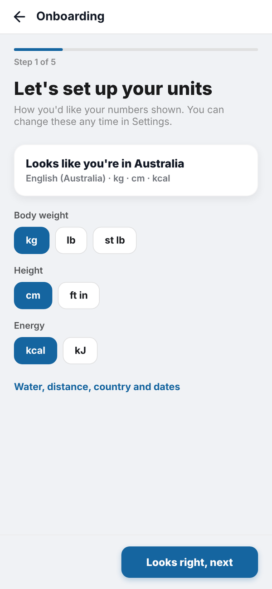
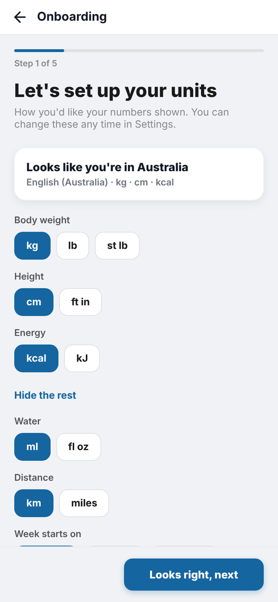
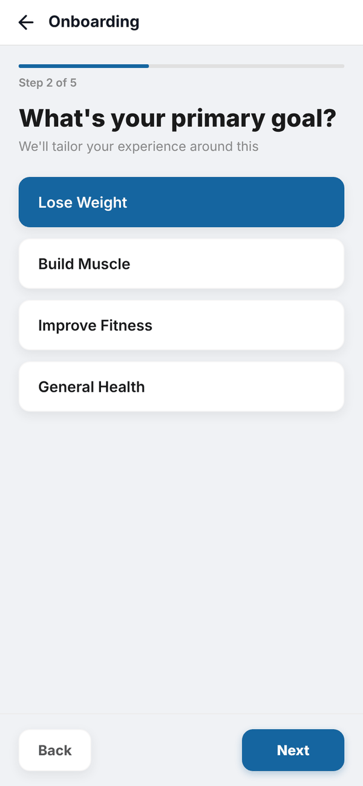
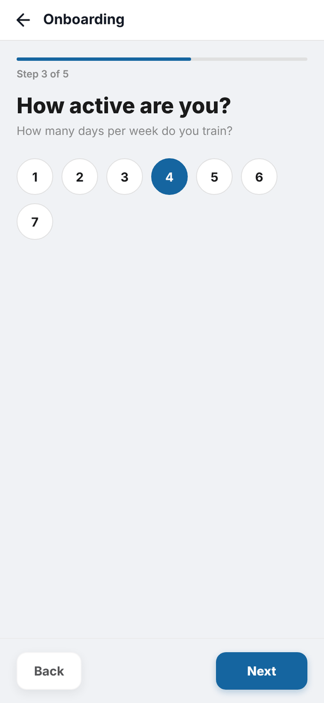
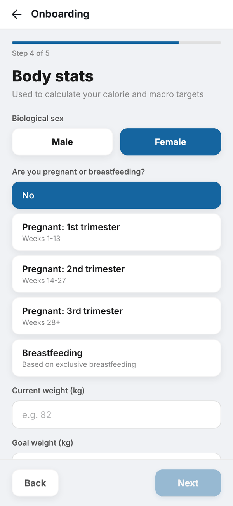
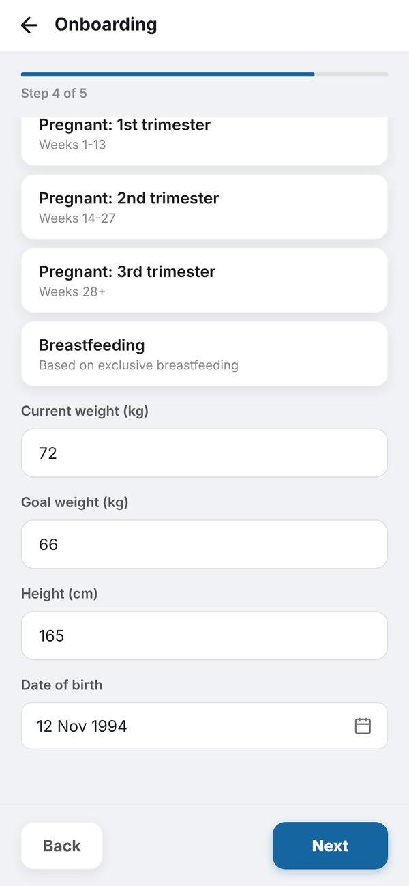
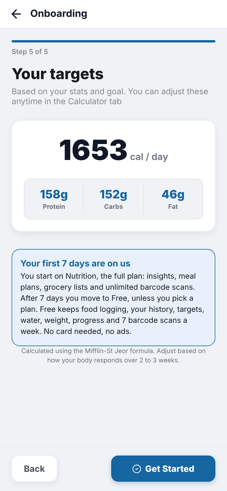

Totality Nutrition guide
Onboarding
The five setup questions, what each one is for, and what happens when you tap Get Started.
Onboarding runs once, straight after you sign up (or the first time a Totality member opens Nutrition). It takes about two minutes and ends with your calorie and macro targets. The bar at the top shows Step 1 of 5 and so on. Back takes you to the step before, and nothing is saved until the last step.
Step 1: units#
"Let's set up your units" guesses your country from your phone and shows a summary, for example "Looks like you're in Australia, English (Australia) · kg · cm · kcal". Pick your Body weight (kg, lb or st lb), Height (cm or ft in) and Energy (kcal or kJ).
Tap Water, distance, country and dates for the rest: Water (ml or fl oz), Distance (km or miles), Week starts on (Monday, Sunday or Saturday), Time (12 hour or 24 hour), Country and Language. Picking a country sets that country's usual units. When it looks right, tap Looks right, next.


You can change all of these later in Settings, Units and region. See Units and region.
Step 2: your goal#
"What's your primary goal?" Pick one: Lose Weight, Build Muscle, Improve Fitness or General Health, then tap Next.
Step 3: how active you are#
"How many days per week do you train?" Tap a number from 1 to 7, then Next.


Step 4: body stats#
- Pick your Biological sex: Male or Female.
- If you pick Female, answer Are you pregnant or breastfeeding? with No, Pregnant: 1st trimester (weeks 1 to 13), Pregnant: 2nd trimester (weeks 14 to 27), Pregnant: 3rd trimester (weeks 28+) or Breastfeeding (based on exclusive breastfeeding).
- Type your Current weight and Goal weight in the unit you chose. Stone users get two boxes (st and lb), and ft in users get two boxes for height.
- Type your Height.
- Tap Select date and pick your Date of birth from the calendar. The double arrows jump a year at a time.
- Tap Next.


The app checks the numbers make sense: weight between 20 and 300 kg (or the same in your unit), height between 100 and 250 cm, and an age between 13 and 100. If something is off you'll see a message like "Check your weight".
Step 5: your targets#
"Your targets" shows your daily calories (or kJ) and grams of protein, carbs and fat. Under it is the "Your first 7 days are on us" card, which explains the trial. Tap Get Started to save.


When you tap Get Started the app saves your answers, saves these targets as your current targets, saves your units, and takes you to Home where Tali's tour starts.
How the numbers are worked out, including pregnancy and breastfeeding, is on Your targets.
Questions#
Can I skip onboarding?
No. The app needs your goal and body stats to set your targets, so it opens onboarding until it's done.
I made a mistake in onboarding. How do I fix it?
Use the Calculator tab to work your targets out again, or Settings, Custom Targets to type your own. Units are in Settings, Units and region.
Does my 7 day trial start now?
Yes. Your trial starts at your first Nutrition onboarding. Settings, Subscription shows how many days are left.
Why does it ask for biological sex?
The calorie formula (Mifflin-St Jeor) uses a different number for male and female bodies. It's only used to work out your targets.